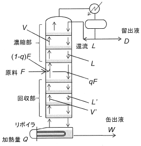

令和2年度 問32 化学プロセス
下図に段型連続蒸留塔内部の気液流れ等を示す。F：原料、D：留出液、W：缶出液、V：濃縮部蒸気流量、L：濃縮部蒸気流量、L’：回収部液流量、V’：回収部蒸気流量で、これら流量は［mol・s-1］単位である。q［-］は供給原料の液割合である。Q［W］はリボイラの加熱量であり、回収部蒸気流量V’はQに比例する。F＝1mol・s-1、q＝0.5、D＝0.3mol・s-1の条件で操作するとき、還流比R＝2から還流比R＝6に変えるために、Qは何倍にするべきか、次のうち最も適切なものはどれか。

①
2倍
②
5倍
③
3倍
④
4倍
⑤
5倍
正答
④ 4倍
還流量をLとすると、還流比R＝L/DであることからL＝RDです。
蒸留塔全体の物質収支を求めると、F＝D＋Wとなります。
またリボイラ部分の物質収支を求めると、V’＋W＝RD＋qFとなります。
「回収部蒸気流量V’はQに比例する」と問題に記載されていることから、2つの物質収支式を使用してV’およびRの式を立てます。
V’＝RD＋qF－(F－D)
F＝1mol・s-1、q＝0.5、D＝0.3mol・s-1の条件で操作すると問題に記載されていることから、V’＝0.3R＋0.5×1－(1－0.3)＝0.3R－0.2となります。
還流比R＝2および還流比R＝6でそれぞれ計算します。
R＝2：V’2＝0.3×2－0.2＝0.4
R＝6：V’6＝0.3×6－0.2=1.6
よって、V’つまりQは1.6/0.4＝4倍にするべきとなります。